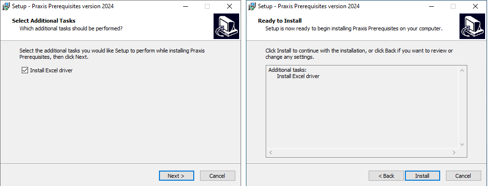

先决条件
| 如果在未先运行 先决条件 的情况下运行 JFY Plus 安装程序，则 JFY Plus 安装程序会在安装开始时显示下方提到的警告消息。先决条件安装仅在 JFY Plus 服务器/客户端首次安装时需要，之后可忽略。 |

-
执行 PreSetup.JFY Plus.<Version>.exe 以安装运行 JFY Plus 应用程序所需的所有先决条件。
| 版本为年份加字母后缀。 |

-
单击 安装 以开始安装。

-
此安装程序会安装 JFY Plus 使用的所有本机可重新分发组件、.Net Framework 和其他驱动程序。

-
单击 完成 以完成安装并重启计算机。